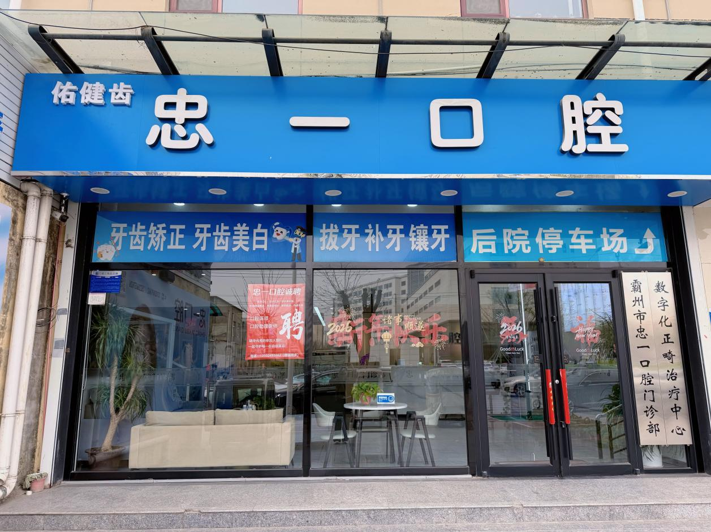
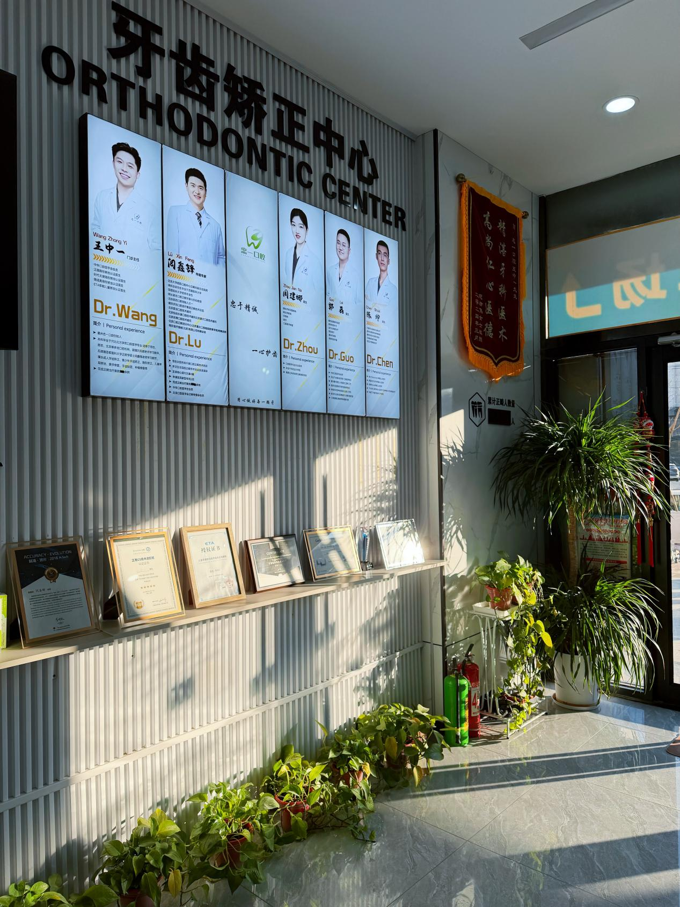
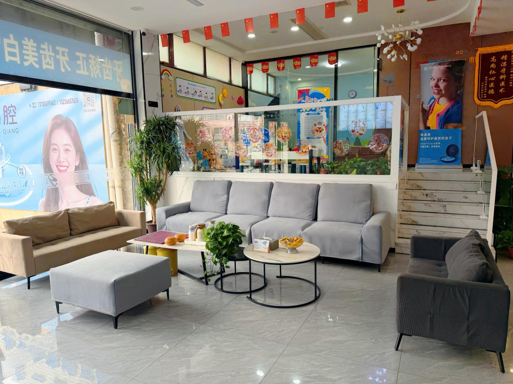
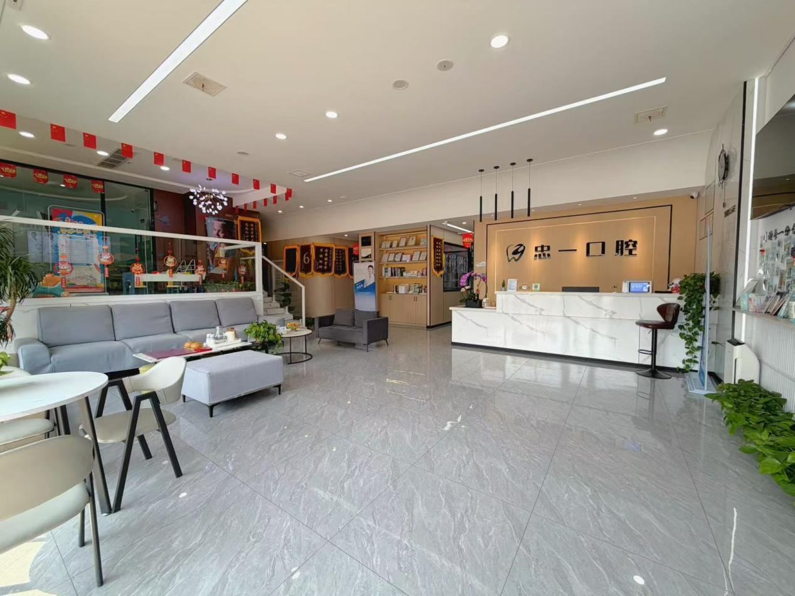
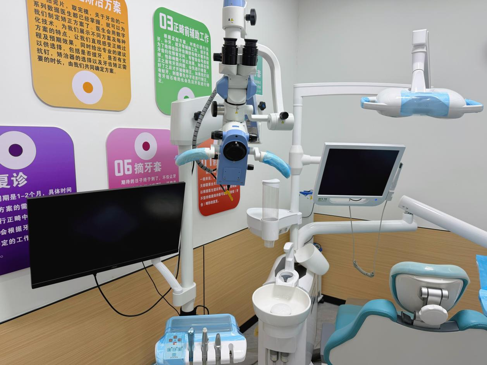
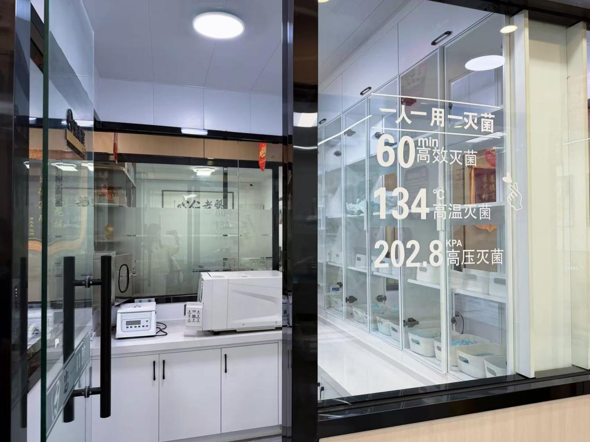

牙齿矫正
特邀北大口腔正畸专家闾鑫锋定期坐诊，金属托槽、隐形矫正（隐适美/时代天使/正雅）、儿童早期干预，数字化方案设计，为青少年与成人定制高效美观的矫正方案。
- 金属托槽矫正
- 隐形矫正
- 儿童早期干预 ETA
- 正雅颌位重建
- 微创支抗钉技术
特邀北大口腔正畸专家定期坐诊，开设牙齿矫正、数字化种植、美学贴面、儿童口腔、根管治疗等全系列诊疗项目，为霸州百姓提供与一线城市同步的专业口腔医疗服务。
忠一口腔创立于2024年，坐落于河北省霸州市兴华中路1812号。门诊以"忠于心，精于齿"为核心理念，致力于为霸州及周边群众提供安全、舒适、高品质的一站式口腔诊疗服务。
团队定期参加国内口腔学术交流与前沿技术培训，门诊严格执行无菌诊疗、一人一用一消毒的院感标准，全面保障患者就诊安全。
一站式精准化口腔健康解决方案，覆盖全年龄段口腔需求
特邀北大口腔正畸专家闾鑫锋定期坐诊，金属托槽、隐形矫正（隐适美/时代天使/正雅）、儿童早期干预，数字化方案设计，为青少年与成人定制高效美观的矫正方案。
由瑞士Straumann、美国HIOSSEN、瑞典Nobel三大种植系统认证医师陈帅主诊，依托CBCT三维数据精准种植导板设计，微创舒适，即刻恢复咀嚼功能。
超薄美学贴面、全瓷冠、树脂补牙，在显微镜下精细化操作，兼顾美观与功能，还原牙齿自然形态与色泽。
窝沟封闭、涂氟预防、儿童早期矫治，温柔诊疗环境配合专业儿童口腔医生，让孩子轻松看牙。王中一医生为ETA儿童早期矫治认证医师。
在口腔显微镜20-30倍放大视野下，精准处理复杂根管、牙体修复等细微问题，热牙胶充填技术，大幅提升治疗精度与成功率。
复杂阻生齿微创拔除、牙周系统治疗、活动义齿修复。周建娜医生为牙体牙髓与牙周诊疗专项骨干，郭磊医生精通现代化显微镜根管治疗。
由北大口腔专家领衔，每位医生均具备正规口腔医学教育背景和丰富临床经验
忠一口腔创始人，中华口腔医学会会员，本科毕业于河北北方学院口腔医学专业。先后在邢台、廊坊、北京等地口腔机构进修，跟随刘凤顺老师潜心学习多年，后跟随首都医科大学正畸学硕士闾鑫锋老师深耕正畸技术。
四大认证医师：正雅隐形矫正、时代天使隐形矫正、隐适美隐形矫正、ETA儿童早期矫治。正雅隐形矫治星级医生，拥有正雅颌位重建技术、GS技术进阶、正畸支抗钉临床应用等多项专项认证。2018年获微创美学树脂修复"最佳贡献奖"。
北京大学医院口腔中心正畸科副主任医师，首都医科大学硕士，师从著名口腔正畸学泰斗厉松教授，是国内正畸领域的资深专家。
隐适美认证医师，曾赴香港参加Invisalign拔牙病例专项研讨会，作为行业专家受邀出席时代天使A-Tech大会。已发表核心期刊文章4篇，申请实用新型专利2项。
闾鑫锋专家定期坐诊忠一口腔，让霸州百姓在家门口就能看北大正畸名医。
瑞士Straumann、美国HIOSSEN、瑞典Nobel三大国际种植系统认证医师，于天津口腔机构从业多年口腔种植手术及修复诊疗，积累了丰富的临床手术经验。以数字化精准舒适种植修复为专长。
中华口腔医学会会员，毕业于华北理工大学口腔医学专业，曾任职于霸州第四人民医院口腔科，拥有扎实的公立医院临床基础。门诊美学修复骨干，精通显微镜根管治疗、热牙胶充填技术。
口腔医学专业主治医师，毕业于河北北方学院口腔医学专业，是忠一口腔临床骨干医师。门诊牙体牙髓与牙周诊疗专项骨干，擅长牙体牙髓疾病、根尖周疾病、牙周病系统治疗。
门诊配备全套高端诊疗设备，实现从检查、诊断到治疗的精准化、可视化、微创化
将根管治疗、美学备牙放大20-30倍，精准处理细微结构
告别传统取模不适，3分钟快速采集口腔数据
三维立体成像，为种植、正畸提供精准科学依据
保障种植手术稳定高效，实现微创精准种植
实现牙周病的舒适、规范化治疗
高清记录诊疗前后对比，为美学修复提供直观影像依据
整洁明亮、布局合理的诊疗环境，严格执行无菌诊疗标准










用专业与温暖，赢得每一位患者的信任
"王主任非常专业，矫正方案讲解得很清楚，孩子戴了隐形牙套一年多，效果很明显，非常满意！"
"陈医生种的牙用了半年了，跟真牙一样好用。手术过程也不怎么疼，比想象的轻松多了。"
"环境特别好，干净亮堂，医生护士态度都很亲切。洗牙体验很棒，以后就定这家了。"
由专业医生团队撰写，解答您最关心的口腔健康问题
霸州忠一口腔是本地专业牙齿矫正机构。门诊特邀北京大学口腔医院正畸科副主任医师闾鑫锋定期坐诊，让霸州百姓在家门口享受北京三甲医院级别的正畸服务。王中一主任是正雅、时代天使、隐适美三大隐形矫正认证医师，同时是正雅隐形矫治星级医生。门诊采用数字化方案设计，为青少年与成人定制高效美观的矫正方案。
种植牙费用因种植体品牌、手术复杂度、是否需要植骨等因素而异。忠一口腔提供瑞士Straumann、美国HIOSSEN、瑞典Nobel等多种国际品牌种植体选择，由三大系统认证医师陈帅主诊。建议到门诊进行免费口腔检查后，由医生制定个性化方案并给出详细报价。
牙齿矫正时间因个体情况而异：
具体时间需到忠一口腔由专业正畸医生面诊评估后确定。
隐形矫正：美观舒适、可自行摘戴、便于清洁，适合轻中度牙齿不齐、对美观要求高的患者。
金属托槽矫正：适应症更广、效果更稳定、费用相对较低，适合复杂错颌畸形患者。
忠一口腔王中一主任同时持有三大隐形矫正品牌认证，会根据您的口腔条件推荐最适合的方案。
儿童牙齿矫正分为三个关键阶段：乳牙期（3-6岁）纠正口腔不良习惯；替牙期（7-12岁）早期干预矫治黄金期；恒牙期（12岁以后）全面矫正。建议家长在孩子7岁左右到忠一口腔做第一次正畸评估。
在正常使用和良好维护下，种植牙可以使用20年以上甚至终身。忠一口腔采用国际品牌种植体，配合CBCT精准定位和规范手术流程，确保种植效果长期稳定。术后定期复查（建议每半年至一年一次）是关键。
忠一口腔采用显微镜下根管治疗和热牙胶充填技术，在局部麻醉下进行治疗，全程微创舒适。一般需要2-4次就诊完成，具体根据牙齿位置和感染程度而定。
绝大多数智齿拔除不需要住院，在门诊即可完成。忠一口腔采用微创拔牙技术，创伤小、术后反应轻。医生会在术前通过CBCT三维影像精确评估智齿位置和风险，为您制定最安全的拔牙方案。
忠一口腔支持多种支付方式，部分诊疗项目可按规定使用医保。预约方式：电话预约（13102491662）、到院预约（霸州市兴华中路1812号）、微信预约。门诊推行全程一对一接诊、预约就诊、术后随访等贴心服务。